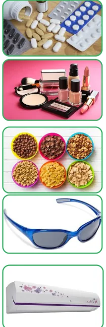

<!DOCTYPE html>
<html lang="en">
<head>
<meta charset="UTF-8">
<meta name="viewport" content="width=device-width,initial-scale=1">
<title>Exercise 4.5 — Life Mathematics</title>
<meta name="description" content="Class 8 Mathematics · Life Mathematics · Exercise 4.5">
<link rel="icon" href="data:image/svg+xml,<svg xmlns='http://www.w3.org/2000/svg' viewBox='0 0 100 100'><text y='.9em' font-size='90'>📘</text></svg>">
<link rel="stylesheet" href="../../../assets/book.css">
<link rel="stylesheet" href="https://cdn.jsdelivr.net/npm/katex@0.16.11/dist/katex.min.css" crossorigin="anonymous">
</head>
<body>
<header class="topbar">
<div class="topbar-in">
  <div class="crumb">
    <span class="c1"><a href="../../../index.html">Library</a> · <a href="../../index.html">Class 8 Mathematics</a></span>
    <span class="c2">Life Mathematics · Exercise 4.5</span>
  </div>
  <a class="tb-btn" data-nav="prev" href="../../04-life-mathematics/10-exercise-4.4/index.html" title="Exercise 4.4">←</a>
  <details class="drawer"><summary class="tb-btn" title="Sections in this chapter">☰</summary>
<div class="drawer-panel"><div class="dh">Life Mathematics</div><a href="../01-chapter-opener/index.html">Chapter opener; 4.1 Introduction</a><a href="../02-applications-of-percentage-in-word-problems-4.2/index.html">4.2 Applications of Percentage in Word Problems</a><a href="../03-exercise-4.1/index.html">Exercise 4.1</a><a href="../04-profit-loss-discount-overhead-expenses-and-gst-4.3/index.html">4.3 Profit, Loss, Discount, Overhead Expenses and GST</a><a href="../05-exercise-4.2/index.html">Exercise 4.2</a><a href="../06-compound-interest-4.4/index.html">4.4 Compound Interest</a><a href="../07-exercise-4.3/index.html">Exercise 4.3</a><a href="../08-compound-variation-4.5/index.html">4.5 Compound Variation</a><a href="../09-time-and-work-4.6/index.html">4.6 Time and Work</a><a href="../10-exercise-4.4/index.html">Exercise 4.4</a><a href="../11-exercise-4.5/index.html" aria-current="page">Exercise 4.5</a><a href="../12-summary/index.html">SUMMARY</a></div></details>
  <a class="tb-btn" data-nav="next" href="../../04-life-mathematics/12-summary/index.html" title="SUMMARY">→</a>
  <button class="tb-btn" data-theme-toggle title="Toggle light / dark" aria-label="Toggle light or dark theme">◐</button>
</div>
<div class="progress"><span style="width:56.5%"></span></div>
</header>
<main class="wrap">
<div class="sec-head">
  <p class="eyebrow"><a href="../index.html">Chapter 4 · Life Mathematics</a></p>
  <h1>Exercise 4.5</h1>
  <p class="sec-meta">Textbook pages 31–32 · 4 figures</p>
</div>
<article class="prose">
<p>Miscellaneous Practice ProblemsMiscellaneous Practice Problems</p>
<figure class="fig side-fig"></figure>
<ul class="qlist">
<li><span class="mk">1.</span><span class="lt">A fruit vendor bought some mangoes of which 10% were rotten. He sold</span></li>
</ul>
<p>\(33 \frac{1}{3}\) % of the rest. Find the total number of mangoes bought by him initially, if he still has 240 mangoes with him.</p>
<ul class="qlist">
<li><span class="mk">2.</span><span class="lt">A student gets 31% marks in an examination but fails by 12 marks. If the pass percentage</span></li>
</ul>
<p>is 35% , find the maximum marks of the examination.</p>
<ul class="qlist">
<li><span class="mk">3.</span><span class="lt">Sultana bought the following things from a general store. Calculate the total bill amount</span></li>
</ul>
<p>paid by her.</p>
<figure class="fig side-fig"></figure>
<ul class="qlist">
<li><span class="mk">(i)</span><span class="lt">Medicines costing ₹800 with GST at 5%</span></li>
<li><span class="mk">(ii)</span><span class="lt">Cosmetics costing ₹650 with GST at 12%</span></li>
<li><span class="mk">(iii)</span><span class="lt">Cereals costing ₹900 with GST at 0%</span></li>
<li><span class="mk">(iv)</span><span class="lt">Sunglass costing ₹1750 with GST at18%</span></li>
<li><span class="mk">(v)</span><span class="lt">Air Conditioner costing ₹28500 with GST at 28%</span></li>
<li><span class="mk">4.</span><span class="lt">P’s income is 25% more than that of Q. By what percentage is Q’s income less than P’s?</span></li>
<li><span class="mk">5.</span><span class="lt">Vaidegi sold two sarees for ₹2200 each. On one she gains 10% and on the other</span></li>
</ul>
<figure class="fig side-fig"></figure>
<p>she loses 12% . Find her total gain or loss percentage in the sale of the sarees.</p>
<ul class="qlist">
<li><span class="mk">6.</span><span class="lt">If 32 men working 12 hours a day can do a work in 15 days, then how many</span></li>
</ul>
<p>men working 10 hours a day can do double that work in 24 days?</p>
<ul class="qlist">
<li><span class="mk">7.</span><span class="lt">Amutha can weave a saree in 18 days. Anjali is twice as good a weaver as Amutha.If both</span></li>
</ul>
<p>of them weave together, then in how many days can they complete weaving the saree?</p>
<ul class="qlist">
<li><span class="mk">8.</span><span class="lt">P and Q can do a piece of work in 12 days and 15 days respectively. P started the work</span></li>
</ul>
<p>alone and then after 3 days, Q joined him till the work was completed. How long did the work last?</p>
<p>Challenging ProblemsChallenging Problems</p>
<ul class="qlist">
<li><span class="mk">9.</span><span class="lt">If the numerator of a fraction is increased by 50% and the denominator is decreased by</span></li>
</ul>
<p>20% , then it becomes \(\frac{3}{5}\) . Find the original fraction.</p>
<figure class="fig side-fig"></figure>
<ul class="qlist">
<li><span class="mk">10.</span><span class="lt">Gopi sold a laptop at 12% gain. If it had been sold for ₹1200 more, the gain</span></li>
</ul>
<p>would have been 20% . Find the cost price of the laptop.</p>
<ul class="qlist">
<li><span class="mk">11.</span><span class="lt">A shopkeeper gives two successive discounts on an article whose marked price is ₹180 and</span></li>
</ul>
<p>selling price is ₹108. Find the first discount percentage if the second discount is 25% .</p>
<ul class="qlist">
<li><span class="mk">12.</span><span class="lt">Find the rate of compound interest at which a principal becomes 1.69 times itself in</span></li>
</ul>
<p>2 years.</p>
<ul class="qlist">
<li><span class="mk">13.</span><span class="lt">A small - scale company undertakes an agreement to make 540 motor pumps in 150 days</span></li>
</ul>
<p>and employs 40 men for the work. After 75 days, the company could make only 180 motor pumps. How many more men should the company employ so that the work is completed on time as per the agreement?</p>
<ul class="qlist">
<li><span class="mk">14.</span><span class="lt">P alone can do \(\frac{1}{2}\) of a work in 6 days and Q alone can do \(\frac{2}{3}\) of the same work in 4 days.</span></li>
</ul>
<p>In how many days will they finish \(\frac{3}{4}\) of the work, working together?</p>
<ul class="qlist">
<li><span class="mk">15.</span><span class="lt">X alone can do a piece of work in 6 days and Y alone in 8 days. X and Y undertook the work</span></li>
</ul>
<p>for `48000. With the help of Z, they completed the work in 3 days. How much is Z’s share?</p>
</article>
<nav class="pager"><a class="" data-nav="prev" href="../../04-life-mathematics/10-exercise-4.4/index.html"><span class="dir">← Previous</span><span class="t">Exercise 4.4</span><span class="ch">Life Mathematics</span></a><a class="nx" data-nav="next" href="../../04-life-mathematics/12-summary/index.html"><span class="dir">Next →</span><span class="t">SUMMARY</span><span class="ch">Life Mathematics</span></a></nav>
</main><footer class="site">Generated from the source textbook PDFs · text, figures and exercises belong to their respective publishers.</footer><script defer src="https://cdn.jsdelivr.net/npm/katex@0.16.11/dist/katex.min.js" crossorigin="anonymous"></script>
<script defer src="https://cdn.jsdelivr.net/npm/katex@0.16.11/dist/contrib/auto-render.min.js" crossorigin="anonymous"
  onload="renderMathInElement(document.body,{delimiters:[
    {left:'\\(',right:'\\)',display:false},
    {left:'$$',right:'$$',display:true},
    {left:'\\[',right:'\\]',display:true}],throwOnError:false,ignoredTags:['script','noscript','style','textarea','pre','code']})"></script>
<script src="../../../assets/book.js"></script>
<script defer src="../../../../assets/search.js"></script>
</body>
</html>
